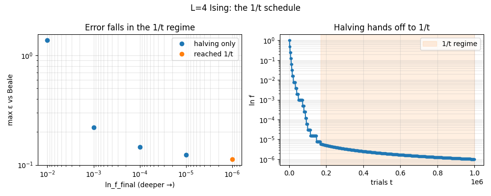

Note
Go to the end to download the full example code.
3. Sharpening convergence with the 1/t schedule¶
Tutorial 2 recovered the thermodynamics from a single g(E) — but only
roughly. Standard Wang-Landau shrinks its modification factor ln f by
halving it at each flat-histogram stage, and that schedule has a known
weakness: once ln f is small the error stops improving, settling onto a
floor set by the flatness criterion rather than by how long you run
(Belardinelli & Pereyra, PRE 75, 046701).
The fix is to let ln f follow 1/t once halving would drop it below that
value. flatwalk makes this handoff automatically. This tutorial shows two
things: that pushing the run deeper genuinely lowers the error, and that it is
the 1/t regime doing the work. The derivation is in The 1/t refinement.
Setup¶
import sys
import tempfile
try:
from pathlib import Path
sys.path.insert(0, str(Path(__file__).resolve().parents[2] / "examples"))
except NameError:
pass # sphinx-gallery exec context: __file__ undefined, sys.path is already set
import beale # noqa: E402
import ising # noqa: E402
import matplotlib.pyplot as plt # noqa: E402
import numpy as np # noqa: E402
from flatwalk import Bin1D, WLConfig, WLDriver, read_trace # noqa: E402
L = 4
cb = ising.make_ising_callbacks(L)
low, high, n_bins = ising.ising_energy_bins(L)
scheme = Bin1D(low, high, n_bins)
log_g_exact = beale.log_g_E_array(L, beale.beale_g_E(L), scheme.centers)
def max_central_eps(result):
"""Max per-bin relative error vs Beale, excluding the two extreme bins."""
valid = result.visited & np.isfinite(log_g_exact)
n_exact = np.exp(log_g_exact[valid])
n_wl = np.exp(result.g[valid] - result.g[valid].max())
n_wl *= n_exact.sum() / n_wl.sum()
eps = np.abs(n_wl - n_exact) / n_exact
eps[0] = eps[-1] = 0.0 # drop the g = 2 corners
return eps.max()
Run to a sequence of depths¶
Each run targets a smaller final ln f. We record the resulting error and
whether the run ever entered the 1/t regime (via its trace).
depths = [1e-2, 1e-3, 1e-4, 1e-5, 1e-6]
errors = []
used_1overt = []
with tempfile.TemporaryDirectory() as tmp:
for k, lnf in enumerate(depths):
tp = Path(tmp) / f"trace_{k}.tsv"
cfg = WLConfig(
bin_scheme=scheme,
beta=0.0,
n_check=1_000,
ln_f_final=lnf,
trace_path=tp,
)
res = WLDriver(cfg).run(
initial_state=ising.random_state(L, np.random.default_rng(0)),
energy_fn=cb["energy_fn"],
order_parameter_fn=cb["order_parameter_fn"],
propose_move_fn=cb["propose_move_fn"],
rng=np.random.default_rng(0),
)
errors.append(max_central_eps(res))
used_1overt.append(any(r.in_1overt for r in read_trace(tp)))
print(
f"ln_f_final={lnf:.0e}: max ε = {errors[-1]:.3f}, "
f"reached 1/t regime = {used_1overt[-1]}"
)
ln_f_final=1e-02: max ε = 1.373, reached 1/t regime = False
ln_f_final=1e-03: max ε = 0.220, reached 1/t regime = False
ln_f_final=1e-04: max ε = 0.146, reached 1/t regime = False
ln_f_final=1e-05: max ε = 0.123, reached 1/t regime = False
ln_f_final=1e-06: max ε = 0.113, reached 1/t regime = True
Keep the deepest run’s trace to show the handoff¶
with tempfile.TemporaryDirectory() as tmp:
tp = Path(tmp) / "deep.tsv"
cfg = WLConfig(
bin_scheme=scheme, beta=0.0, n_check=1_000, ln_f_final=1e-6, trace_path=tp
)
WLDriver(cfg).run(
initial_state=ising.random_state(L, np.random.default_rng(0)),
energy_fn=cb["energy_fn"],
order_parameter_fn=cb["order_parameter_fn"],
propose_move_fn=cb["propose_move_fn"],
rng=np.random.default_rng(0),
)
rows = read_trace(tp)
What the schedule buys you¶
Left: the error falls as the run goes deeper — but only once the run crosses
into the 1/t regime (orange markers). Shallow, halving-only runs (blue) sit on
a higher floor. Right: ln f over a deep run, halving (steep steps) handing
off to the smooth 1/t tail.
t = np.array([r.t for r in rows])
ln_f = np.array([r.ln_f for r in rows])
in1 = np.array([r.in_1overt for r in rows])
fig, (axE, axF) = plt.subplots(1, 2, figsize=(10, 4))
depths_arr = np.array(depths)
mask1 = np.array(used_1overt)
axE.loglog(
depths_arr[~mask1], np.array(errors)[~mask1], "o", color="C0", label="halving only"
)
axE.loglog(depths_arr[mask1], np.array(errors)[mask1], "o", color="C1", label="reached 1/t")
axE.set_xlabel("ln_f_final (deeper →)")
axE.set_ylabel("max ε vs Beale")
axE.invert_xaxis()
axE.set_title("Error falls in the 1/t regime")
axE.legend()
axE.grid(alpha=0.3, which="both")
axF.semilogy(t, ln_f, "o-", color="C0", ms=3)
if in1.any():
axF.axvspan(t[in1].min(), t.max(), color="C1", alpha=0.12, label="1/t regime")
axF.legend()
axF.set_xlabel("trials t")
axF.set_ylabel("ln f")
axF.set_title("Halving hands off to 1/t")
axF.grid(alpha=0.3, which="both")
fig.suptitle(f"L={L} Ising: the 1/t schedule")
fig.tight_layout()
plt.show()

The error is lower — but reaching it took many iterations, and every one of them called back into the energy function. When that backend is expensive, the number of calls is the cost. The next tutorial cuts it by advancing many walkers per call.
Total running time of the script: (0 minutes 20.949 seconds)